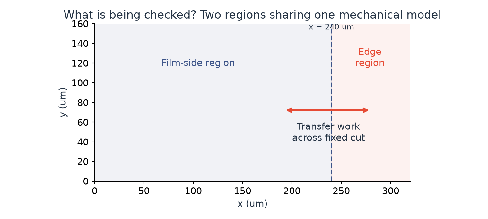
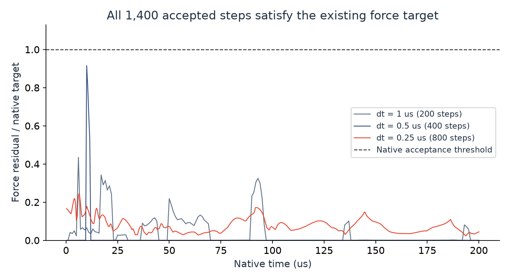
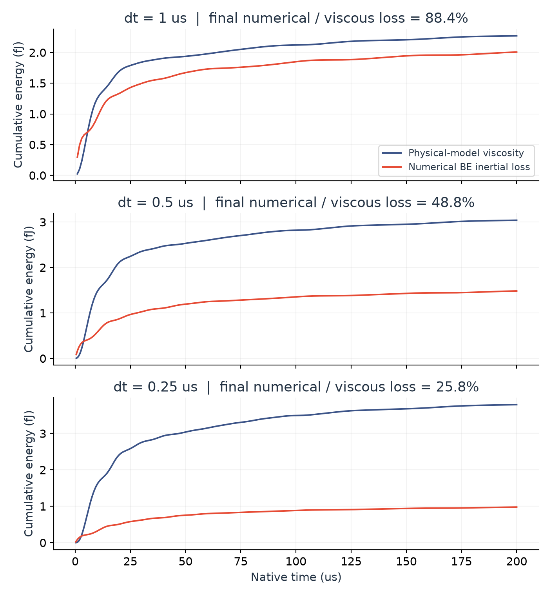
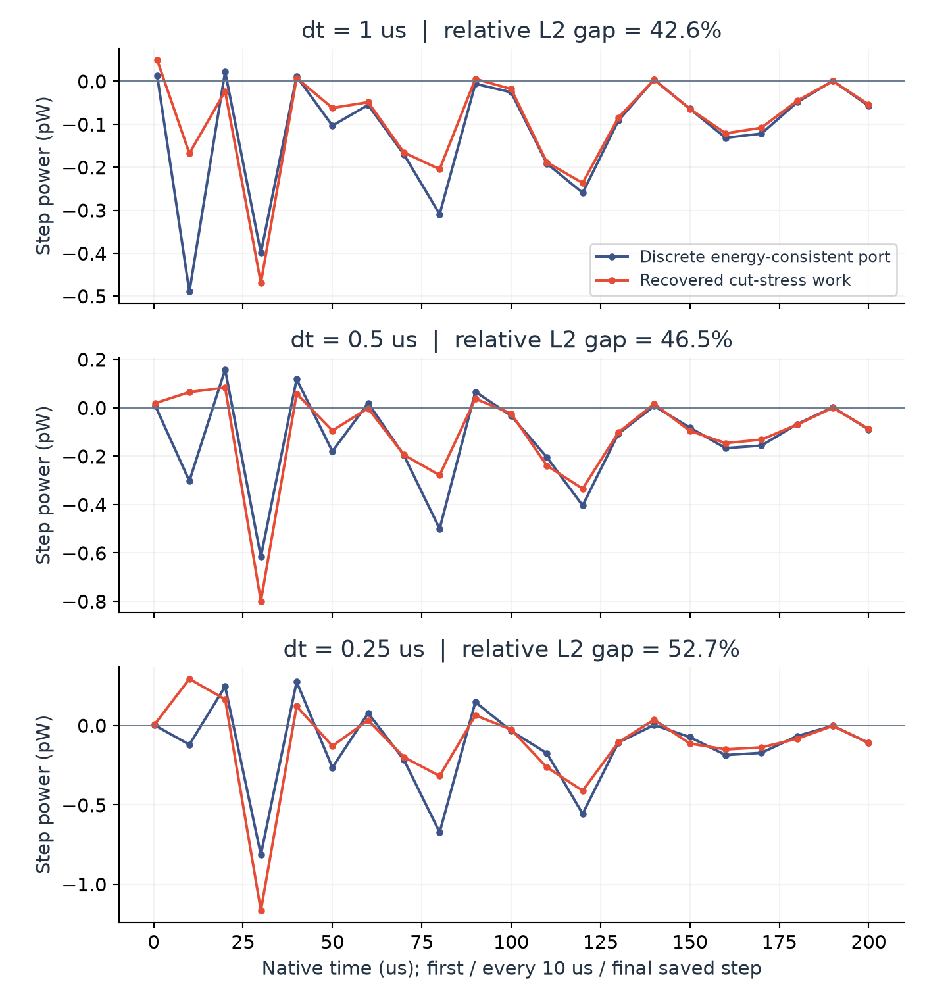

2026-11-13 · 机械诊断阶段已完成
膜为什么还没算稳？
从能量账本，查到切面传功。
我们保持原来的薄膜模型和轨迹不变，给计算增加了一组“测量仪表”：检查每一步的力是否算准、能量花在哪里，以及膜内与边缘之间如何传功。
01 · 这次到底做了什么？
把区域想成两个相连的房间：薄膜一侧、靠近边缘的一侧。我们同时检查“各自存了多少能量”“内部损失多少”“通过连接处传了多少功”。区域边界固定在 x = 240 微米；粒子移动导致的区域归属变化单独记账。

新增的观察器读取原生计算状态，不改变力、材料、时间步或求解阈值。关闭观察器的对照，以及开启后的三个长重放，其原有六份轨迹文件均与冻结结果逐字节相同。实现中首次发现的 CSV 固定标记格式问题也保留了原始记录，修正格式后另建了主批次。
本轮完成 5 次主批次运行：一次 200 微秒关闭观察器对照、一次 1 微秒启动检查、三次 200 微秒重放。另有 24 项原生检查通过，其中 6 项为新增；85 个保存状态步通过独立标量公式核对。全部任务已结束，单例最长约 60 秒。
02 · 力没有“没算够精细”的证据
图中每条曲线表示“最后的力残差 ÷ 当前求解器允许的残差”。低于虚线 1，就是达到原有标准。三个时间步的全部接受步都通过，最大比值为 0.916。

判断：没有依据仅靠进一步收紧 Newton 力阈值来解决此前的运动差异。空间离散、时间离散和分步耦合仍需分别检查。
03 · 找到一个值得追踪的数值影响
蓝线是模型中的黏性耗散；红线是后向欧拉时间离散带来的惯性数值损失。两者来源不同。时间步缩小后，红线与蓝线的累计比值从 88.4% → 48.8% → 25.8% 下降，但仍不可忽略。

意味着什么：观察到的运动对时间步敏感，可能部分受到数值损失影响。我们尚未通过隔离实验确定贡献比例，也不能把这项损失解释成真实薄膜的额外黏性。
04 · 账本对上了，切面传功还没对上
蓝线从离散黏性能量与力的关系计算切面传功；红线从局部重建的应力和速度计算同一切面的功。两条线相对 L2 差异为 42.6%、46.5%、52.7%，没有随本轮时间加密而消失。

这说明“离散账本严格闭合”和“连续物理切面牵引验证”是两个不同要求。局部重建的应力尚不一定包含离散面修正所对应的数值通量；差异也不能直接证明物理黏性模型错误。
相关的 HMM 统一框架与 SUSHI 原始论文为检查稳定化、梯度重建与数值通量的关系提供了参考。这些是标量扩散工作，与当前移动薄膜的向量黏性算子是否等价仍需推导；本项目不把通用能量账本或梯度恢复作为创新点。
05 · 这一轮收尾，下一轮验证什么？
- 先验证切面传功的定义。从当前黏性双线性形式推导包含面修正贡献的数值传功，用仿射场与固定切面小算例检查。
- 再隔离时间离散影响。分别检查惯性数值损失与力学—排液分步，保持材料、物理切面和判据不变。
- 最后回到原始目标。通过时空收敛与物理通量检查后，再推进排液、边缘再生、黑膜与实验定量对比，不用拟合排液律制造目标现象。
数据与复现
本页结论可追溯到原生日志、冻结参数、公式核对与原始 CSV。保留首次格式检查在内，共 64 份原始文件，约 15.08 MB，分卷恢复后逐字节校验。
展开技术说明与下载
- 研究代码与复现脚本
- 公式、采样范围与解释限制
- 冻结协议和源代码哈希 · 运行状态 · 完整分析摘要
- 独立机械量审计 · 独立标量公式审计
- 主批次原生日志 · 首次格式问题记录
- 原始文件哈希清单 · 恢复与校验脚本
- 原始数据分卷 1 · 1.01 MB
- 原始数据分卷 2 · 1.32 MB
- 原始数据分卷 3 · 1.24 MB
恢复命令：python restore_raw.py REPORT_DIRECTORY NEW_OUTPUT_DIRECTORY。目标目录中的同名文件不得已存在。
此处独立机械审计覆盖保存步；逐步力阈值与累计能量来自原生全步统计。区域毛细能导数另经有限差分单元检查，尚无独立连续毛细牵引验证。